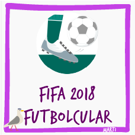
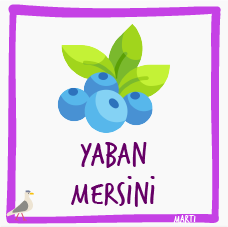
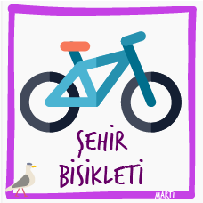
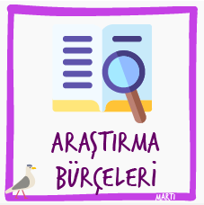

🔽 İndir
FIFA 18 Futbolcuları
Bu veri setinde, FIFA ilk 100'deki oyuncuların isim, yaş, ülke, skor gibi bilgilerini bulabilirsin.
🔽 İndir
Erken Gölü Fitoplanktonları
İsveç'teki Erken Gölünün fitoplankton biyokütlesi değerleri.
🔽 Katman Verisini İndir 🔽 Düzenli Ölçüm İndir

🔽 İndir
Maine Yaban Mersini Üretimi
Maine'in temel geçim kaynaklarından biri olan yaban mersini üretiminin yıllık üretim değerleri.
🔽 İndir
Araştırma Kurumlarındaki Kadın Katılımı
Üst yönetim kurullarında kadınların temsil edilme oranları
🔽 İndir

🔽 İndir
Şehir Bisikletleri
Bu veri setinde, dört durak arasındaki bisiklet kullanımının süre verisi bulunmaktadır.
🔽 İndir

Ormanlık Alanlar
Bu veri setinde, 1990-2018 yılları arasında ülkelerin ormanlık alanlarının yüzölçümlerine oranı verilmiştir.
🔽 İndir

🔽 İndir
Araştırma Bütçeleri
Bu veri setinde, ülkelerin araştırmaya harcadıkları veriler bulunmaktadır.
🔽 İndir

Plastik Üretimi
Bu veri setinde, yıllara göre dünya genelinde plastik üretim verilerini bulacaksın.
🔽 İndir